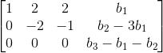
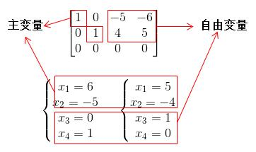
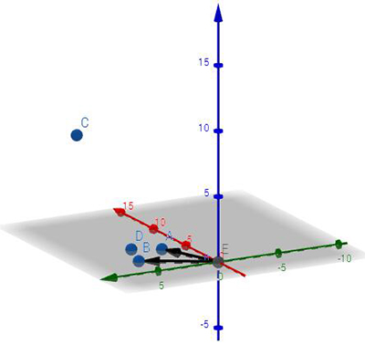

这张图顺便可以帮忙我们整理下之前所讲过的内容。
矩阵渊源
首先来看下怎么定义矩阵这么一个存在吧。直观上来看就是一组数字写在一起，可以简化方程组的运算（把变量都省去了），简化方程组可以让我们更加直观地发现构成方程组的各种元素，这样能更好发现规律。所以本人一直怀疑或许矩阵就是从方程组转换来的，后来查了下资料，发现都来自《九章算术》，再阅览了其下的《方程章》，惊奇发现原来矩阵和方程组是同时出现的。但是回想一下又不稀奇，对于方程组中的未知数，我们一直用x,y,z来标注，但对于古人来说英文字母是不存在的，那如何计算方程，直接写成矩阵形式然后用矩阵消元不就可以了？
所以矩阵最开始可以认为是用来算方程的。后来随着研究的深入才发掘出矩阵的各种性质，发展成现如今的线性代数。
向量空间
现在进入正题吧，什么叫做向量空间，向量空间的性质是什么？当空间中的任意向量相加或数乘（实数乘以向量）运算时，结果仍然在原来的空间里，这才能叫作向量空间，其是一个“封闭”的空间。同时有一点非常重要，向量空间永远都能经过零点（或零向量）
如果忘了的如何定义的话，可以参照番外篇 · 向量空间，可以知道空间的定义十分严苛，所以这四大空间的定义并不是随便定义的，而是有一定的意义才会定义出来的。
行空间
假设矩阵A为m*n的矩阵，那么我们先来看行空间。行空间，顾名思义就是矩阵每行向量所组成的空间。看到行空间，第一印象就是消元操作，毕竟消元运算是行空间的一种处理方式，也是计算AX=b的解的一种有效方法。下面是一个消元的例子：

若是忘了怎么消元，可以参照消元法？矩阵转换？。
那对于AX=b什么情况下无解？这时可以从消元法上分析，可以参照下面一个例子，当b3-b2-b1=0时方有解：

对于求AX=b还有另一种形式的用法，也就是将矩阵A拆解成两个矩阵L和U，一个下三角矩阵和一个上三角矩阵，如下：

具体方法可见PA=LU？
那对于b=0，也就是AX=0时又该如何处理呢？同样是消元法，可以将矩阵逐步消元成矩阵R（左方存在一单位矩阵），如下面这个矩阵：

然后直接求出解空间：

忘了怎么操作的可以参照AX=0？
零空间
讲完行空间，我们下面来看下零空间。刚刚求出AX=0的解空间，而这解空间就是矩阵A的零空间。零空间的维数大小跟自由变量的个数一致，如下例子：

所以其零空间为：
可以知道零空间的维数为2。注意该零空间是
 的一个2维子空间。
的一个2维子空间。
行空间与零空间
这两个子空间正交。若忘记正交的定义可参照正交 = 垂直？。
这是为什么？因为AX=0。矩阵A行空间中每条向量与零空间X中的每条向量内积为0。举个例子：
那么假如行空间有一条向量T，由于在行空间上，可以表示成:
其中k1,k2为常量。再假定零空间有一条向量L，由于在零空间上，可表示成：
其中h1,h2为常量。那么T与L内积为：
所以很明显零空间与行空间正交。
另外，零空间的维数与行空间的维数加起来正好等于n（对于m*n的矩阵而言）。这又是为什么？下面看一张图就了解了：
主变量个数正是行空间的维数（线性不相关的行的个数），而零空间维数正好是自由变量的个数，如果对于这些比较模糊的可以参阅AX=0？。 零空间还可以用来判断矩阵是否可逆，如果零空间维数为0那么矩阵一定可逆。如果对可逆的概念不熟悉的可参考矩阵可逆？
列空间
下面来讲讲列空间，列空间就是矩阵每列向量组成的空间。这是认识一个矩阵的基础，因为每个矩阵都可以通过列空间来查看其具体情况———将复杂的矩阵看成是多个向量的组合体可以直观地观察矩阵，可见矩阵的直观理解。
再来看AX=b这个问题吧，什么情况下有解？上面的行空间解释过了可以利用消元，这里从列空间角度出发，如果b点不在列空间里，那么AX=b无解。如下图：

图中列空间为xy平面（图中为向量OA，OB组成），但b点（图中为点C）存在了z轴上变量，所以无解。但当b点（图中为D点）存在xy平面上时，有唯一解。
那么AX=b什么情况有唯一解，这时得从列空间的秩出发，忘了秩的概念可以查看秩的介绍
当r=n=m时(满秩矩阵)，矩阵A是个方阵，AX=b有唯一解(b全都位于A的列空间里)。
当r=n<m(列满秩)时，AX=b要么无解，要么有唯一解(b落在A的列空间里才有唯一解，否则无解)。
当r=m<n时(行满秩)，AX=b有无数解(b全都落在A的列空间里，但列向量个数多于列空间维数导致向量组合有无数种)。
当r<m,r<n时，AX=b要么无解，要么有无数解(b落在A的列空间里才有解，且由于列空间维数小于列向量个数，所以会出现无数解)。
具体原因忘了的话可以参照AX=b的解？
左零空间
这是个新的名词，之前没提过。但是要理解起来也不难，因为这是:
中X的空间，是不是跟零空间很像，只是零空间是左乘矩阵A，这个是左乘矩阵A的转置。那为什么叫做左零空间，因为上式左右各求转置可以化成：
零空间是AX，是矩阵A右乘零空间X，而左零空间则反过来，是矩阵A左乘空间X，所以称为左零空间。
列空间与左零空间
这两个子空间正交。具体证明可以参照上头行空间与零空间的证明，因为把矩阵A转置后，其列空间就是转置后的行空间，而左零空间就是转置后的零空间，性质一致。
同理，列空间的维数加上左零空间的维数为m，也是将矩阵A转置后按上头之前的证明就可以得知。
列空间与行空间
这两个空间的联系是矩阵的秩，行秩等于列秩，这是一定的，可参照聊聊行秩？=列秩。
至此，这个图也就讲的差不多了，下一章来看下什么是投影矩阵。